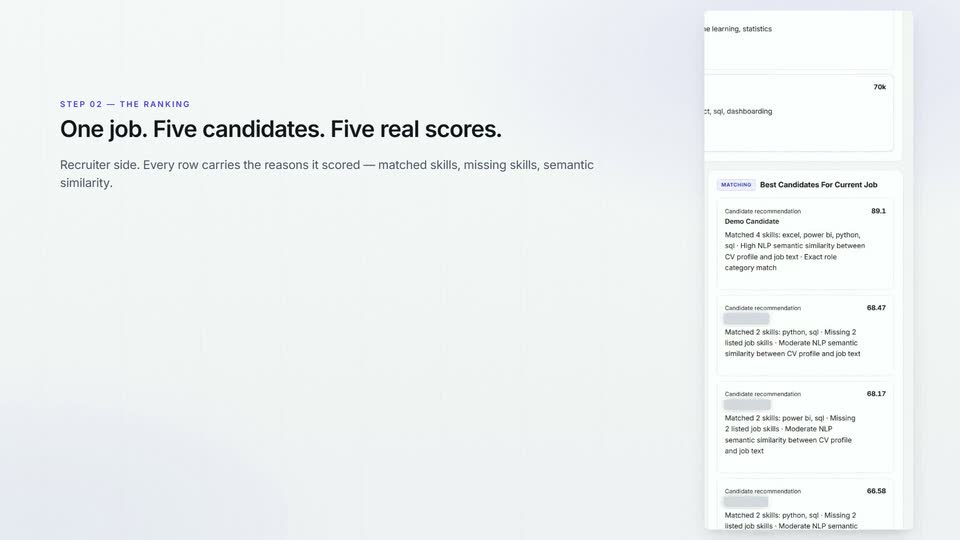
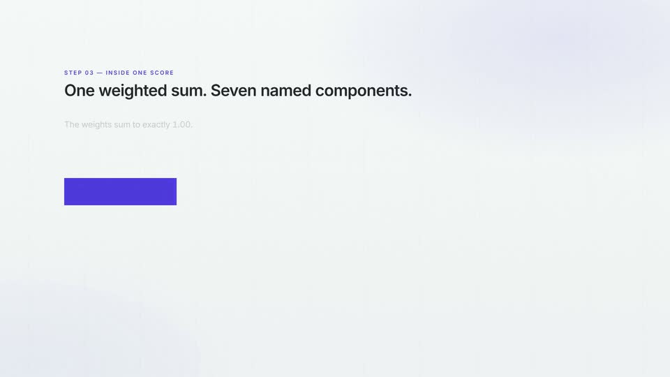
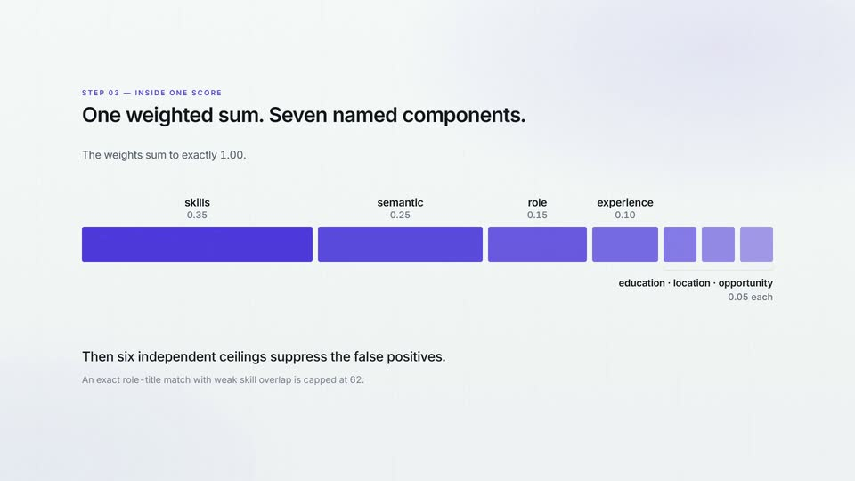

Talent Bridge
Job matching that shows its work: a seven-part score over 785,741 scraped postings, with every sub-score, matched and missing skill, and written reason in the response.
Overview
Keyword ATS filters rank a job title above a candidate who can do the work, and explain neither decision. Talent Bridge puts an uploaded PDF through a CNN document gate that accepts it, rejects it, or holds it back as unverified — the stored sample accepts at 0.997 — grades its structure and content 96 out of 100 on a hybrid deep-learning-and-rules path, and scans its text against a fixed 84-skill vocabulary. That profile is then scored against job rows from a SQL Server star-schema warehouse on seven weighted components — skills 0.35, MiniLM embedding similarity 0.25, then role, experience, education, location, opportunity — and the API response carries every sub-score, matched and missing skills, and written reasons. Demand comes from the corpus itself: 668,704 of 785,741 scraped postings carry parsable skills. The hard part was false positives: two stages of ceilings cap matches supported only by the job title, so a title hit with a skills sub-score under 35 is held at 62.
Problem and objectives
Keyword ATS filters rank a job title above a candidate who can do the work, and explain neither decision.
- Screen an uploaded CV before trusting it
- Score it against real postings on components a recruiter can read
- Stop a matching job title from outranking matching skills
Architecture
CV upload
The candidate's document.
- CV upload PDF — The candidate's document.
- Document gate CNN + text evidence — Accepts, rejects, or holds the file back as unverified.
- Quality grade deep learning + rules — Structure and content graded out of 100.
- Scoring engine PyTorch · MiniLM — Seven weighted components, then two stages of ceilings.
- Warehouse SQL Server · SSIS — A 14-table star schema with bridge tables for each posting's skills.
- API FastAPI · 65 routes — Every sub-score, matched and missing skills, and the reasons.
- Dashboard Vue 3 · Power BI — What recruiters and candidates read.
Engineering challenges and decisions
- Two-stage cap layer ceilings title-only and low-signal-skill matches before ranking
- Missing skills tiered critical to low by demand across 668,704 skill-bearing postings
- SSIS star schema, 14 tables, bridge tables decomposing each posting's skill list
- CNN plus text-evidence document gate, then a hybrid DL-and-rules quality grade out of 100
The 62 cap
- The constraint
- Keyword ATS filters rank a job title above a candidate who can do the work, and explain neither decision.
- What I rejected
- One confidence score.
- What I did
- Two stages of ceilings cap matches supported only by the job title: a title hit with a skills sub-score under 35 is held at 62.
- What it cost
- Real title matches get capped too.
Technologies
My contribution
Built the scoring engine, the FastAPI backend, the SQL Server warehouse and the Vue dashboard.
Screens
Stills from the demo film.



Results
- 785,741
- scraped postings; 668,704 carry parsable skills
- 65
- FastAPI routes
- 14
- tables in a SQL Server star schema built by 6 SSIS packages
- 0.997
- document-gate acceptance on the stored sample, graded 96 out of 100